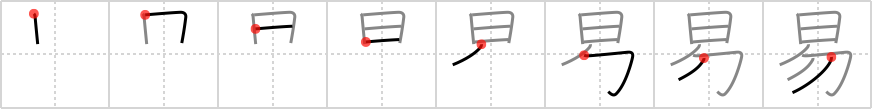

易
← →
easy

Reading:
On-Yomi: エキ、イ — Kun-Yomi: やさ.しい、やす.い
Heisig story:
Sun . . . knot.
Koohii stories:
1) [ruisu] 21-11-2007(210): The sun is not an easy place to get to.
2) [saranich] 31-3-2006(128): Under the sun, it is easy to untie a knot. Under a pitch-dark sky, it is knot so easy.
3) [astridtops] 12-7-2006(78): If you take the ceiling off your piggy bank, you'll have easy money!
4) [radical_tyro] 18-6-2007(29): It is not easy to tie your tongue wagging in mouth in a knot.
5) [fuaburisu] 11-10-2005(12): On a sailing ship, the old sailor challenges a new young recruit to a task and teases him : "See the sun over there ? When it settles down way over there on the other side of the boat, you have to have untied that knot. You've got all day to untie that knot, easy ! ".